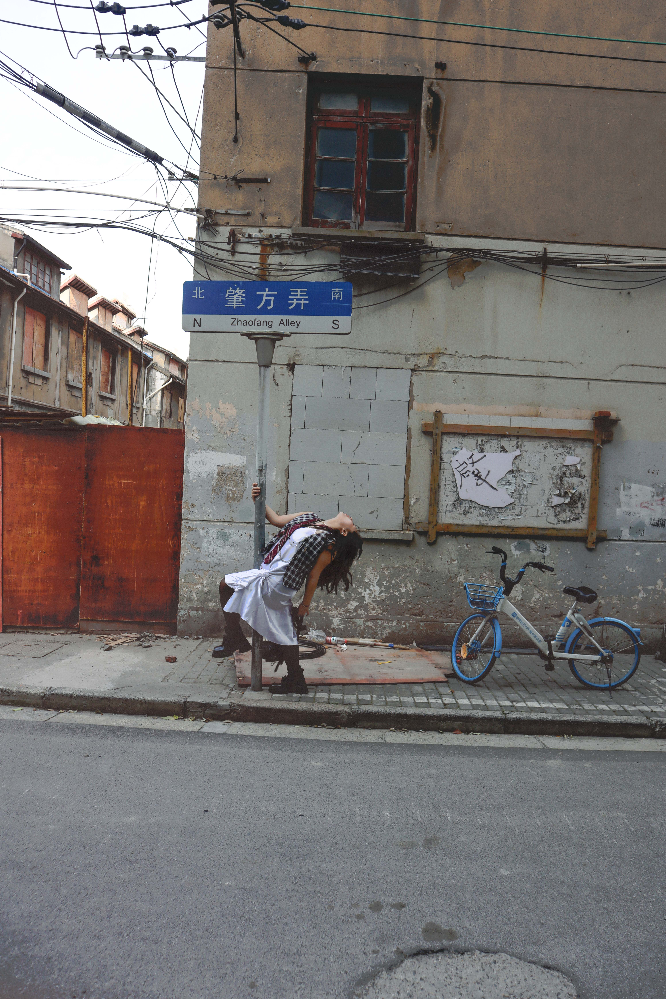
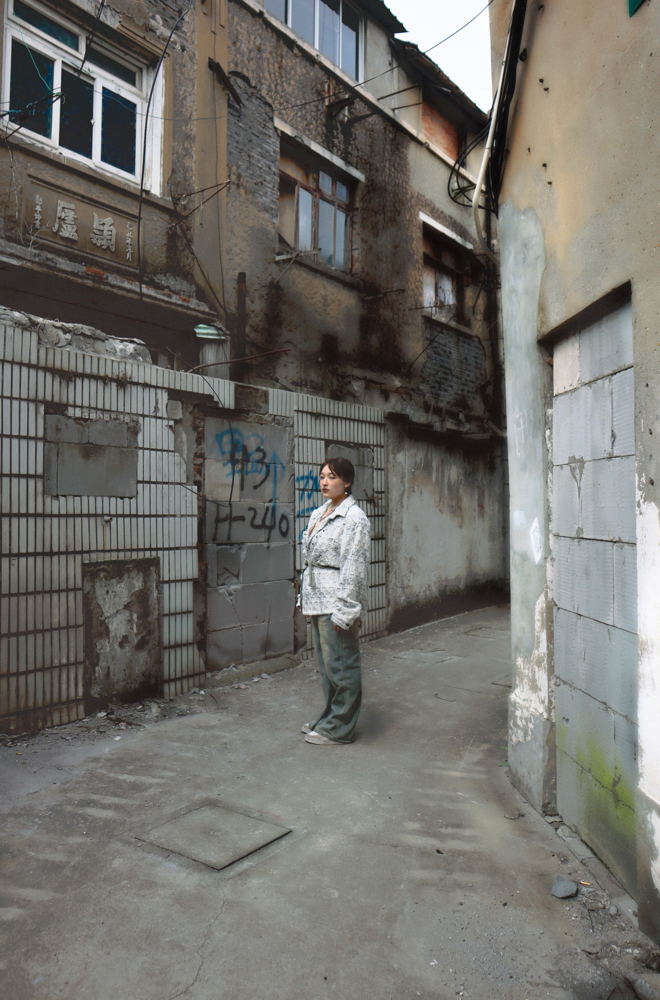

I USED TO BE SUPER ANXIOUS AND SUPER INSECURE, I THINK VERY INTIMIDATED... DRESSING UP BECAME LIKE A SHIELD.
HOW HAS THE WAY YOU WANT PEOPLE TO PERCEIVE YOU CHANGED SINCE COMING TO SHANGHAI?
New York actually felt very small to me. It's a huge city, obviously. I think people grow up way too fast in New York. Everybody has a thing they're chasing and doing, and I think you're always kind of trying to catch up to them. There's always this sense of competition and you're like, ‘I want to be seen as the best’. But since coming here, I just feel more peaceful; I don't feel like I have to compete with anyone. I gained so much more appreciation for the different varieties of people that exist and like how they present themselves and not really viewing anything instead of that.

WHAT'S YOUR STYLE? HOW WOULD YOU DESCRIBE IT?Like a five year old that gained access to their mom's closet! I stole a whole bunch of my mom's clothes from when she was young. And this is my favorite jacket ever. My dad bought it in Italy when he was young. He treasures it so much, and I stole it from him, so now I treasure it. Getting a lot of my parents' old clothes was a part of self-acceptance because I’m mixed. I used to kind of feel ashamed of a lot of parts of my culture. But then when I started dressing up in my parents’ clothes—like I would get a lot of my mom's jewelry and she's from Central Asia, so she has a lot of traditional jewelry. I just felt a little more connected to my past; I can actually learn more about my past instead of rejecting it and trying to fit in somewhere. It’s okay if people don't accept me, then I don't belong there.

LIKE IF YOU WERE TALKING TO ALIENS AND THEN YOU WERE TRYING TO CONVEY SOMETHING ABOUT YOURSELF-CLOTHES WOULD BE SO PERFECT TO DO THAT.
OBVIOUSLY THERE'S THE IDEA THAT FASHION IS A FORM OF SELF-EXPRESSION, BUT WHAT IS THERE MORE FOR YOU?It's not even just self-expression. It's putting myself out into the world, taking that leap of faith that I can express myself through clothes. Some sort of message will be received on the other end. Like if you were talking to aliens and then you were trying to convey something about yourself—clothes would be so perfect to do that. They represent different areas or represent different cultures. I also think it has a lot of push and pull, of struggles you feel. Like if you felt rejected at any point, and then transformed that anger against the world or into how you want to dress and protect yourself. You feel so much stronger. You feel like, you know what? I can be myself. I also see it as an act of resistance. A lot of fashion influences that go mainstream come from ostracized communities. When you decide, you know, I'm not going to follow the norm and I'm not going to let these people tell me how I should just how I should be, I think you're resisting. You're protesting against that.